AnyPortrait > 시작하기 > 1.4. 메시 그룹 만들기
1.4. 메시 그룹 만들기
1.1.7
AnyPortrait의 여러 요소들 중에서 가장 중심이 되는 것이 메시 그룹(Mesh Group)입니다.
이름만 보면 "메시들이 함께 있는 것" 정도로 보이기 쉽지만, 메시 그룹에 각종 기능을 추가하면 다양한 효과를 줄 수 있습니다.
이때, 추가되는 기능을 모디파이어(Modifier)라고 부릅니다.
메시 그룹에 어떤 모디파이어를 추가하느냐에 따라 본 애니메이션을 할 수도 있고, 모핑 애니메이션을 줄 수도 있습니다.
여기서는 메시 그룹을 생성하여 모디파이어를 추가하기 전 단계까지를 다룹니다.
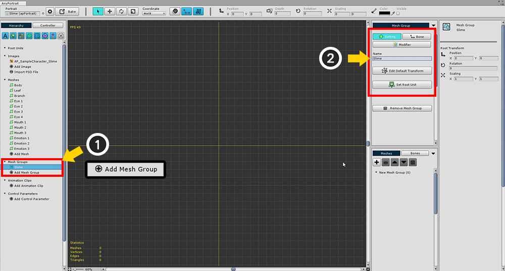
Hierarchy UI에서 (1) "Add Mesh Group" 버튼을 누르고 생성된 메시 그룹을 선택합니다.
메시 그룹을 선택하면 우측 화면에서 "Setting", "Bone", "Modifier" 메뉴가 나타납니다.
Setting 메뉴를 선택한 상태에서 (2) Mesh Group의 이름 (Slime)을 적어줍니다.
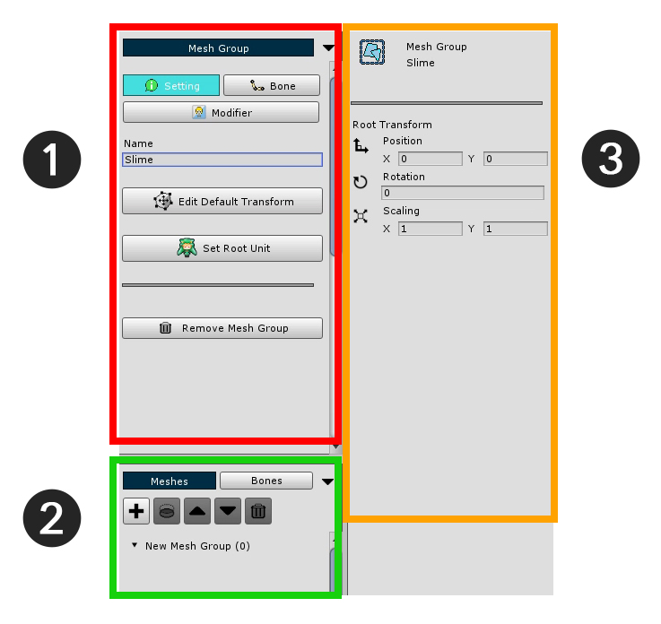
메시 그룹의 상세 정보 화면은 크게 3개의 구역으로 나뉩니다.
1. 작업 메뉴 : 여기서는 "Setting", "Bone", "Modifier"의 메뉴를 선택합니다. 각 메뉴의 기본 설정이나 하위 메뉴를 출력합니다.
2. Sub Mesh / Mesh Group Hierarchy, Bone Hierarchy : 메시 그룹에 속한 메시나 하위 메시 그룹, 또는 본을 출력합니다.
3. 선택한 객체 정보 : 메시나 모디파이어, 본 등 각각의 메뉴에서 선택한 객체의 정보가 출력됩니다.
이때 (1) 작업 메뉴의 UI를 사용하여 메시 그룹의 기초 작업을 해야합니다.
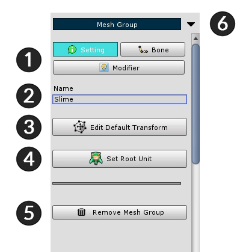
1. 메뉴 탭 : "Setting", "Bone", "Modifier" 메뉴를 선택합니다.
2. Name : 이름을 수정할 수 있습니다.
3. Edit Default Transform : 이 기능을 ON으로 둔 상태에서 메시를 옮길 수 있습니다. 메시의 "기본 위치"를 지정하는 기능입니다.
4. Set Root Unit : 버튼을 누르면 현재 메시 그룹을 루트 유닛으로 등록합니다. 루트 유닛으로 등록된 메시 그룹만 씬으로 옮겨집니다.
5. Remove Mesh Group : 이 메시 그룹을 삭제합니다.
6. 메뉴 접기 : 이 구역을 접어서 최소화 합니다.
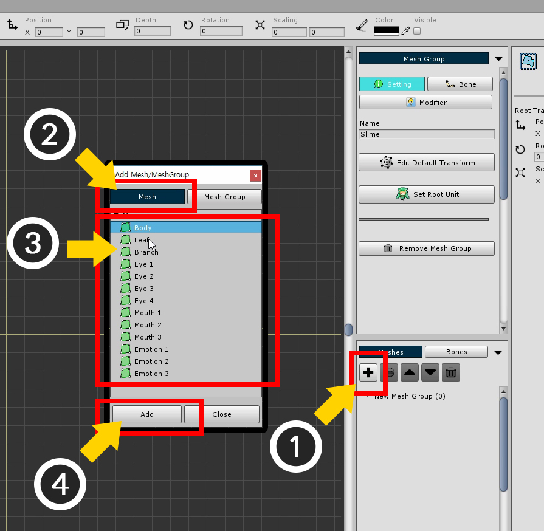
메시들을 메시 그룹에 추가합니다.
(1) "+" 버튼을 눌러서 추가할 대상을 선택하는 다이얼로그를 호출합니다.
이 다이얼로그에서는 메시를 선택하거나 다른 메시 그룹을 선택하여 추가할 수 있습니다.
(2) Mesh 탭을 누릅니다.
(3) 메시를 하나 선택한 뒤 (4) Add 버튼을 눌러서 메시를 추가합니다.
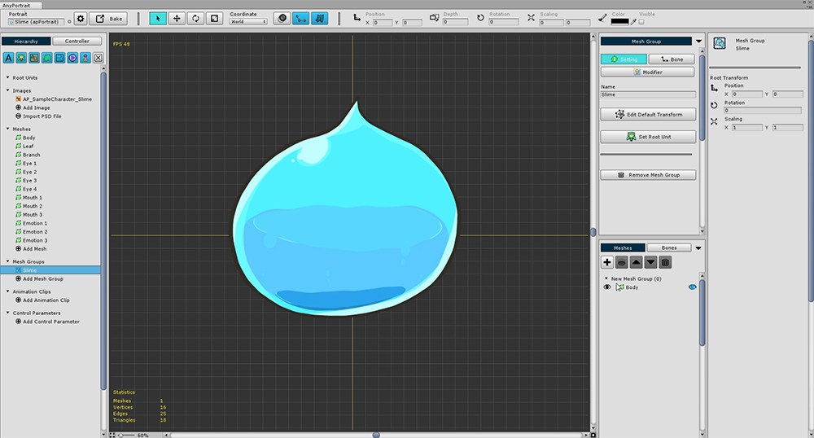
위와 같이 메시가 하나 추가되었습니다. 위 과정을 모든 메시에 대해서 반복합니다.
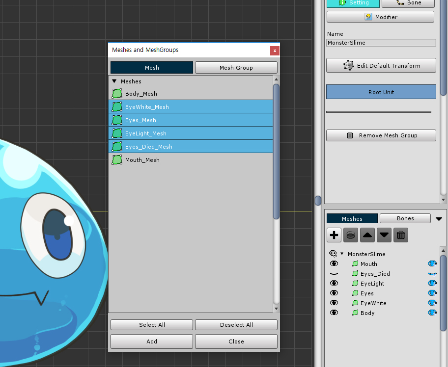
v1.1.7부터 여러 개의 메시나 메시 그룹을 선택하여 한번에 추가하는 것이 가능해졌습니다.
Ctrl 이나 Shift 를 누른 상태에서 다수의 메시나 메시 그룹을 선택하면 됩니다.
Select All / Deselect All 버튼을 눌러서 모두 선택하거나 해제할 수 있습니다.
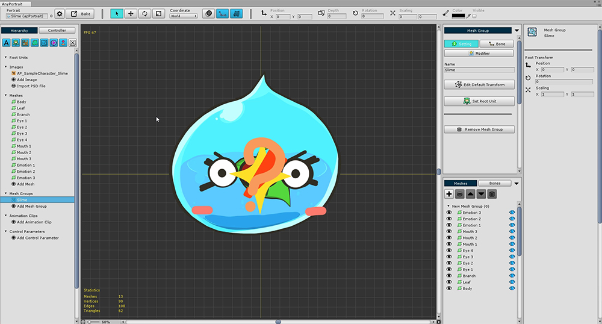
모든 메시를 추가하면 위와 같은 모양이 됩니다.
위치가 모두 원점으로 모여있기 때문에 모양이 예쁘지 않습니다.
게다가 모든 눈, 입 모양이 한꺼번에 출력되기 때문에 구분하기가 어렵습니다.
각각의 메시들의 "기본 위치"를 수정하고 "Show/Hide 기본값 지정" 작업을 해보겠습니다.
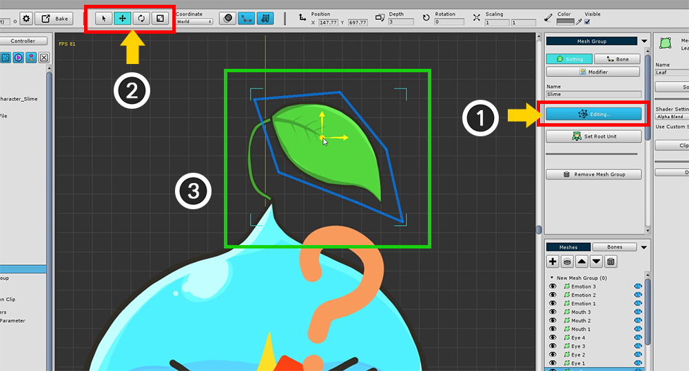
(1) Edit Default Transform 버튼을 누릅니다. 버튼을 누르면 버튼이 푸른색으로 바뀌면서 활성화됩니다.
이 상태에서 메시/메시 그룹을 이동하여 기본 모양을 잡을 수 있습니다.
(2) 화면 상단의 "Select", "Move", "Rotate", "Scale" 툴(단축키 Q, W, E, R )을 적절히 사용하여
(3) 메시를 선택하여 적절한 위치로 배치합니다.
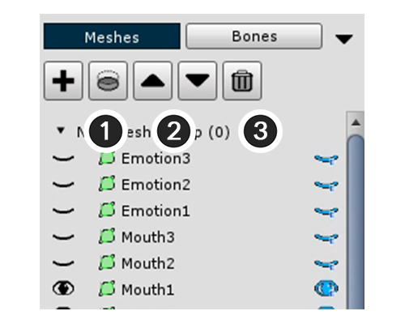
등록된 메시들의 렌더링 순서를 바꿀 필요가 있거나 삭제할 필요가 있다면 Sub Mesh Hierarchy의 상단 메뉴를 이용하면 됩니다.
1. 아래 레이어로 클리핑(Clipping) : 선택한 레이어의 아래 레이어를 클리핑 마스크로 이용합니다.
2. 렌더링 순서 Up/Down : 렌더링 순서를 바꿉니다. 렌더링 순서는 위에 있는 메시가 가장 앞에 렌더링됩니다.
3. 선택한 객체 제거 : 추가된 메시 또는 메시 그룹을 제거합니다.
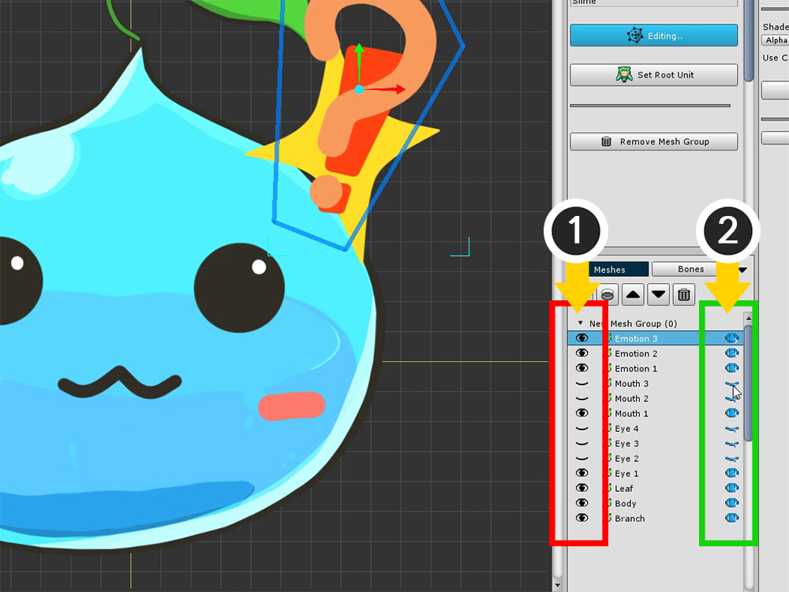
작업을 하다보면 메시들이 겹쳐서 잘 보이지 않는 경우가 있습니다.
Sub Mesh Hierarchy의 각 항목의 왼쪽과 오른쪽에 각각 눈 모양의 아이콘이 있습니다.
각각 객체를 보이거나 숨기게 하는 기능입니다. (Show/Hide)
다만, 그 차이점이 있습니다.
왼쪽의 눈 모양 버튼은 작업을 위한 "일시적인 출력 여부"를 결정합니다. 실제로 저장되는 값이 아닙니다.
오른쪽의 눈 모양 버튼은 "실제로 저장되는 출력 여부의 값"입니다.
Default Edit Transform을 작업하고 있는 현재 상태에서는 "모디파이어가 없을 때의 초기의 출력 여부"를 결정합니다.
< 메시의 일시적 출력 여부에 대해서 >
작업을 위한 "메시의 일시적인 출력 여부"에 대한 팁입니다.
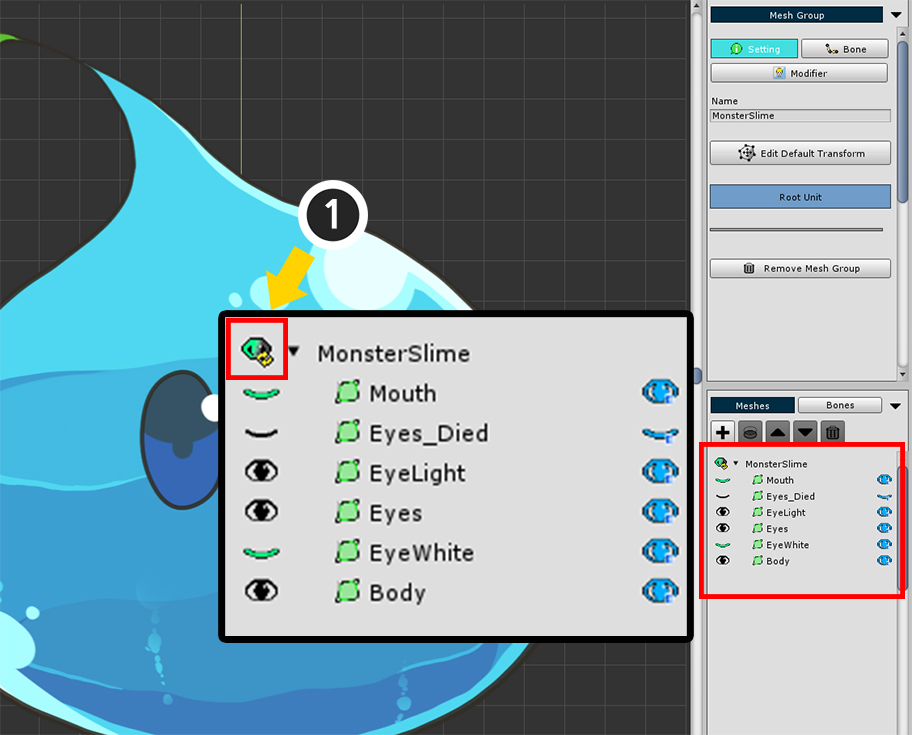
(1) 리스트 위쪽의 버튼을 누르면 "일시적 출력 여부"가 모두 리셋됩니다.
(2) Ctrl 을 누르고 눈모양의 아이콘을 누르면 나머지 모든 메시들이 선택한 메시의 출력여부와 반대로 설정됩니다.
(3) 에디터 설정에 따라서 작업이 진행되는 동안 "일시적 출력 여부"가 자동으로 리셋되지 않도록 만들 수 있습니다. (관련 페이지)
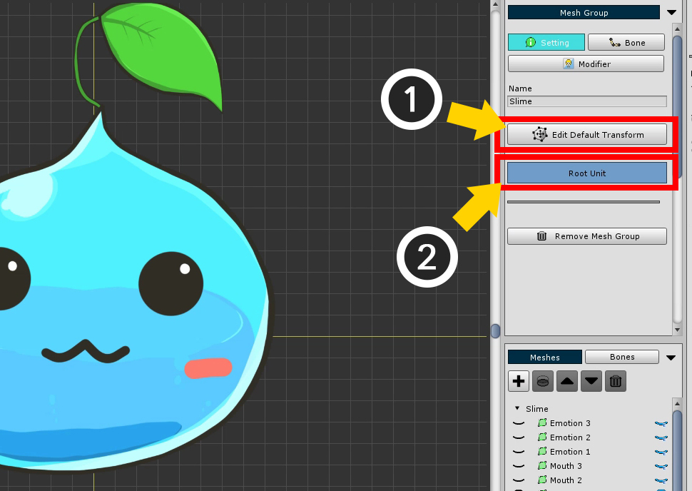
메시들의 기본 위치와 기본 출력 여부를 모두 설정하였다면 (1) Edit Default Transform 모드를 끕니다.
이제 이 슬라임을 씬으로 옮기기 위해 (2) 루트 유닛(Root Unit)으로 설정합니다.
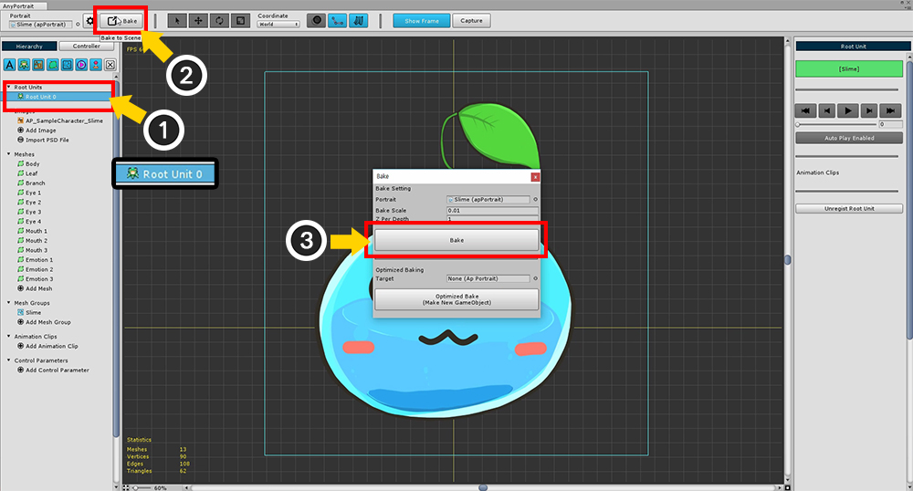
루트 유닛으로 설정하였다면 좌측 UI에 "Root Unit 0"이 추가된 것을 볼 수 있습니다.
(1) "Root Unit 0"을 선택하여 방금까지 작업한 메시 그룹이 나오는지 확인합니다.
(2) Bake 버튼을 눌러서 씬으로 내보내기 위한 다이얼로그를 엽니다.
다이얼로그의 (3) Bake 버튼을 누르고 에디터를 종료합니다.
참고 :
Bake를 하면 모든 Root Unit이 씬으로 내보내집니다.
그 중 Root Unit 0이 먼저 보여지고 나머지는 숨겨집니다.
스크립트나 애니메이션을 이용하여 다른 Root Unit으로 교체할 수 있습니다.
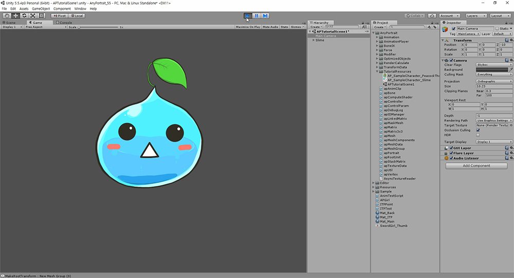
씬에 적용된 슬라임을 확인할 수 있습니다.
게임을 실행하면 "초기값으로 지정된 Show/Hide"가 작동하는 것을 볼 수 있습니다.
AnyPortrait를 위한 씬 설정하기
제작한 캐릭터를 씬으로 옮기면 제대로 나타나지 않거나 색상이 밝거나 어두울 수 있습니다.
2D 캐릭터와 재질에 맞게 씬을 구성해야 합니다.

먼저 씬을 생성하면 자동으로 추가되는 Directional Light를 삭제합니다.
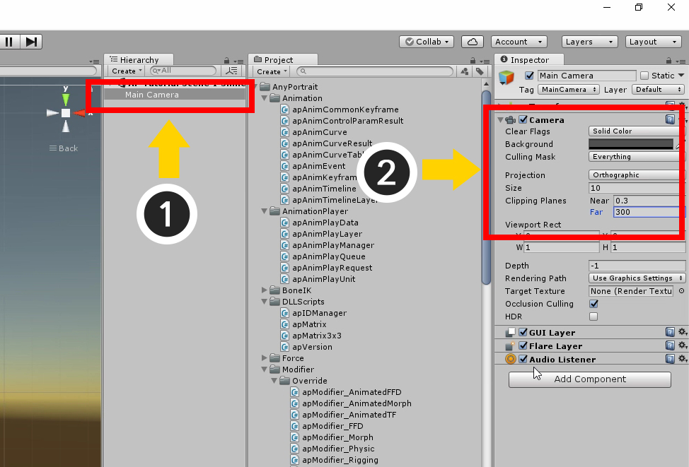
(1) Main Camera를 선택합니다.
(2) 카메라 설정을 다음과 같이 변경합니다.
- Clear Flags을 Solid Color로 설정합니다.
- Projection을 Orthographic 타입으로 변경합니다.
- Size를 변경합니다. 일반적으로 AnyPortrait로 만든 결과물의 경우 10의 값을 지정하는 것이 좋습니다.
- Clipping Planes를 설정합니다. Near와 Far의 간격이 500이내가 되는 것을 권장합니다.
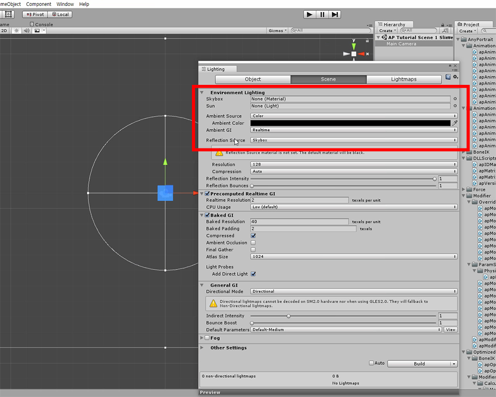
상단 메뉴의 Window > Lighting을 눌러서 라이트 설정을 엽니다.
이 설정을 다음과 같이 변경합니다.
- Skybox는 해제합니다.
- Ambient Source는 Color로 바꿉니다.
- Ambient Color는 검은색 (0, 0, 0)으로 변경합니다.
AnyPortrait v1.4.7부터는 기본 재질이 수정되어 라이트 제거 작업을 하지 않아도 됩니다. (관련 페이지)